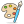

Breakdown
Situation
The Game Jam was one week. Our team consisted of two designer, a developer, an artist, and a music composer. We worked remotely for the project, shared files through Githubong, and used Figma to design the project, and used Trello to keep track of our files and progress.
Goal
Our project goal was to win either the community or the judges vote in a category
- Fun to play
- Best art
- Most related to theme
- Most inclusive
Deliverables
- Lo-fi wireframe
- Hi-fi prototype
- User flow
- A/B testing
- Usability testing
Discovering our game
Ideating Gameplay
The theme for the project was announced on the first day.
Game Theme: Food
We had no idea what our game would be. As designers, we wanted to get an understanding of the game, so we could research the style.
We tossed ideas around and landed on a 2D game where players would bounce between two robots finding ingredients and play through mini-games to complete a dish.
Design Patterns
We searched the internet for patterns in video game menus. Looking through 2D pixel art games, we found that the types of menu designs widely varied.
- Skeumorophic paper designs Binding of Isaac
- Card designsSonic
- 3D mapsCeleste
- 2D mapsFez
We found no strong patterns in our gaming niche.
Inspiration Board
Our artist was interested in working on an 80’s styled project. We searched for 80s themed restaurants and restaurant artifacts to guide the look of our characters and UI. I created three inspiration boards.
- a colorful vector shape look
- a sepia-toned old-style look
- drive-in look
My partner and I were happy to work on any of the different styles. We left the decision to the artist who decided on the colorful vector shape look.
Creating the design
Level Select User Flow
We created a simple user flow to see what pages we would need. Conversations sprouted from the lo-fi wireframes.
One discussion was about whether a second screen was needed for the level select flow. We decided that the second page would prevent players from loading into the wrong level. This was worth the addition of another page.
Fun Fact
Before the game jam theme was announced. We had already created the WIP (Work in progress) name for our game... PROJECT EGGROLL!
What a coinkydink 😯
Assuming Functionality
We still weren’t sure what our developer was able to do in the timeframe. He told us to do whatever we wanted and we would scale back if needed. So we experimented with customization options that were ultimately not included in the game.
Transitioning into Mid-fi
Because of our limited time, our design was based on assumptions. We iterated from our lo-fi concepts with the inspiration board in mind. To make our design look like a menu, we put prices next to each option.
Games often have virtual currency to manage. Our game didn’t have this mechanic. To minimize confusion, we had each price be a different real-world currency.
Testing our design
Research prep
Our testing focused on how well the restaurant aesthetic read, and the level select flow. We developed a usability test that aimed to clarify these two areas. The test was separated into two phases.
The first phase, participants would explore the screens and give thoughts. We kept the questions broad to avoid leading their answers.
The second phase was when we asked our questions directly.
Did the menu prices confuse you?
What genre do you think the game is?
The interviews had to conducted the same day to keep our deadline. We created two solutions to address our concerns. We hosted our designs on Usability Hub for an A/B test.
Research results
We changed a few variables during our A/B testing. This resulted in some users returning with unclear responses. There was still a clear favorite, but I made a note of for future tests.
I like this one more because the primary action (Start Game) is more consistent with other experiences that users are familiar with. On the other screen the explosion is more attention grabbing, but it also looks less like a button, so users might not recognize it at first.
For the usability test, our participant was confused with the pricing. He ignored it thinking it would be explained later in the test. This wasn’t what we wanted, but it worked well enough to continue.
In the first phase, the interviewee commented that the screen reminded him of a restaurant menu. He moved through the flow without issue. This made us feel confident in our design.
Creating the design
Gameplay Design
The game mechanics were fleshed out. It had transformed into a 2.5D style. The gameplay also shifted to a scavenger hunt game. Players would search for items from a list. The challenge lies in the map being split into two kitchens, and a time limit.
For the design we needed: a way to display the scavenger list, an indicator teaching players how to switch kitchens, and the timer. During internal testing, we found it difficult to spot the items. We added a pop-up whenever the player was near a pick-up item.
Because our developer needed the design quickly, we didn’t have time to explore this page in-depth.
Learning new skills
Throughout the project, my partner and I were learning Unity. Unity is the program we used to create the game. We learned enough to add our designs without support from our developer. We also learned to use Git and Github for version control. There were no handoffs because of this.
I gained knowledge in Unity’s UI system, and animation. The added pressure of our deadline made this experience really fun. This did take time away from our designing, but I enjoyed it thoroughly.
The Game
Retrospective
We finished our project and launched it on itch.io, and it received 13 ratings from the community with the highest rating being art due to our fantastic artist. During the closing stream, they also announced our game as the winner for “The Most Inclusive” category.
I think the biggest spot that was lacking was our actual gameplay screen.I didn’t have a clear understanding of how it was going to play until near the end. Some ideas were dropped and mechanics that were implemented later on that I didn’t fully understand.
If I were to go back to work on this game more, I would do a redesign of the game page and add some more information that explained the gameplay a bit more. I enjoyed working with all of my team members, and this was an experience I was glad to go through. The tight deadline and fast progression of work were very fun to see.